Duas irmãs.
Uma mesma causa.
A Paixão Lopes nasceu do encontro de duas trajetórias que sempre caminharam para o mesmo lugar: a defesa séria e humana dos direitos de quem confia em nós.
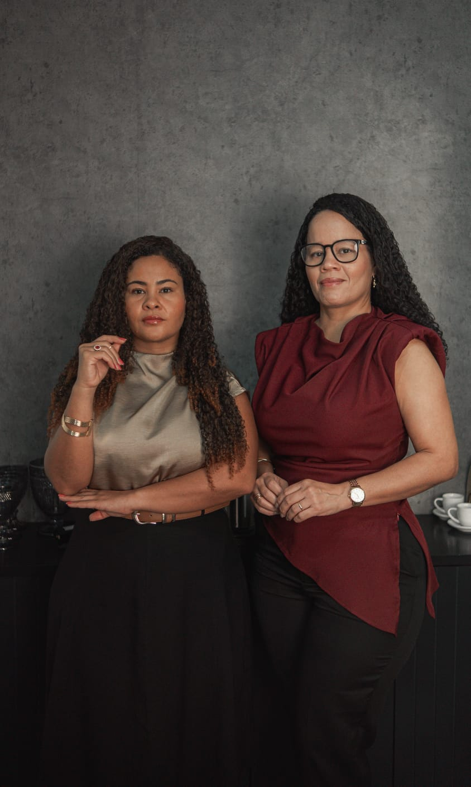
Dra. Marcela & Dra. Márcia Paixão
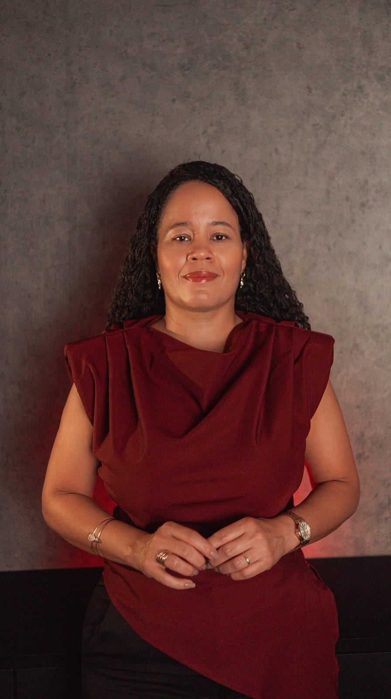
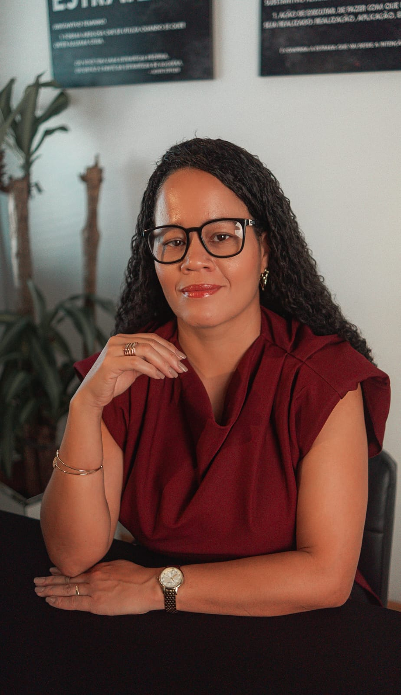
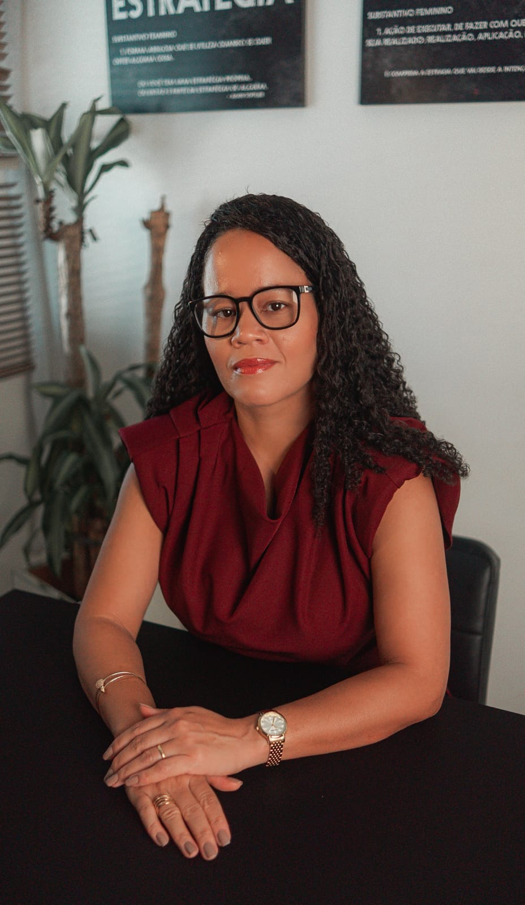
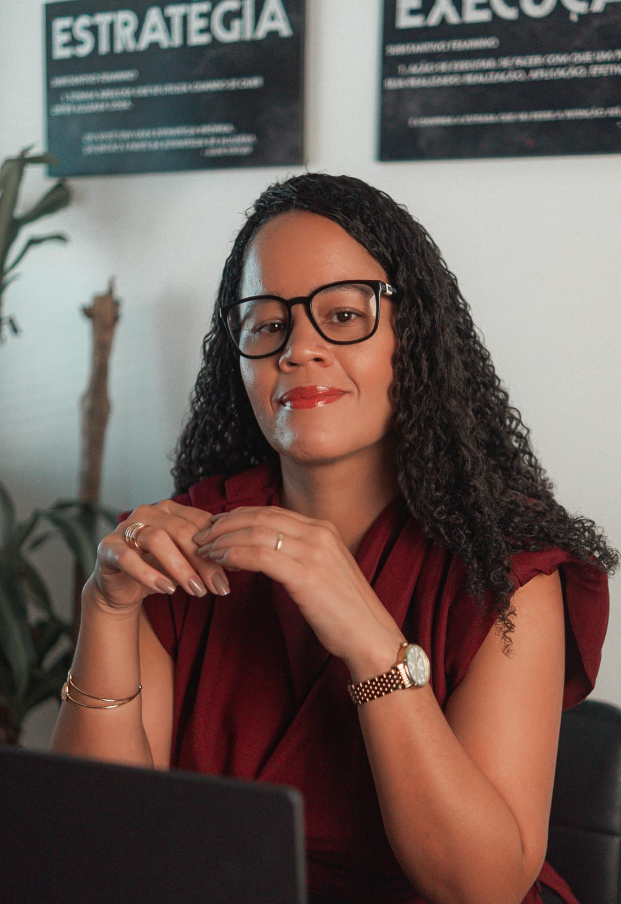
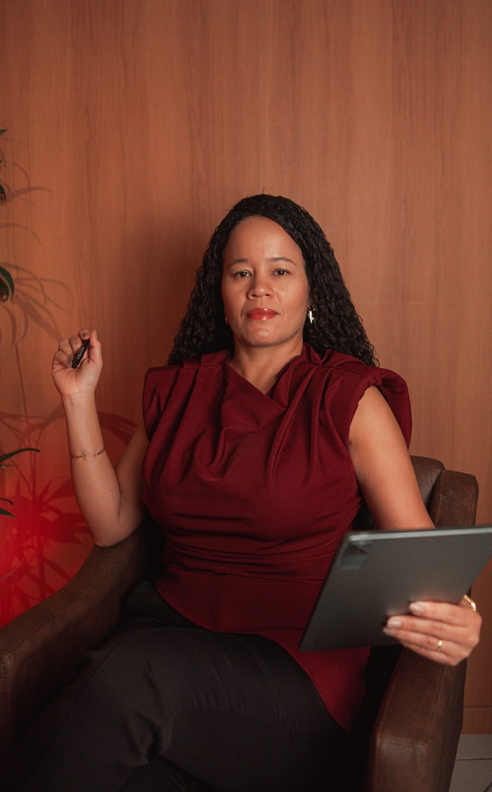
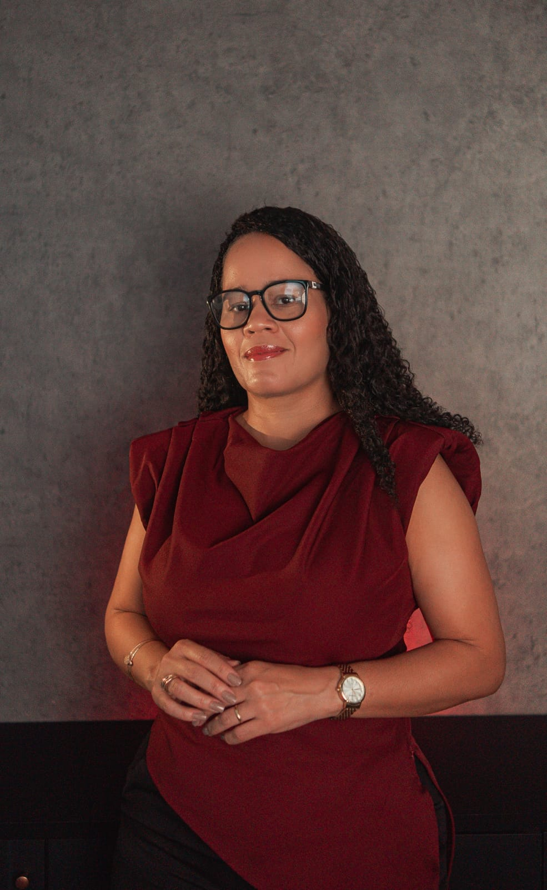
Dra. Márcia Paixão
Direito Previdenciário, Trabalhista e Cível · OAB-RJSou Técnica Contábil, com mais de 20 anos de experiência na área, e Advogada por vocação e realização. Ao longo da minha trajetória profissional, sempre alimentei o sonho de cursar Direito e exercer a advocacia. Com dedicação e perseverança, transformei esse sonho em realidade.
Em 2023, após oito anos de atuação em uma empresa onde construí uma sólida experiência profissional, decidi iniciar uma nova etapa da minha vida: empreender na advocacia. Nessa jornada, tive o privilégio de contar com o apoio da Dra. Marcela, minha irmã e sócia, com quem compartilho não apenas os laços familiares, mas também os mesmos valores e propósitos.
Acreditamos que estamos vivendo a concretização de uma promessa de Deus, que há muitos anos nos mostrou que trabalharíamos juntas e prosperaríamos em nossos negócios. Essa fé nos inspira diariamente e fortalece nosso compromisso com cada cliente que confia em nosso trabalho.
Temos Deus como nosso maior investidor e alicerce. Por isso, conduzimos nossa atuação com ética, responsabilidade, profissionalismo e respeito, buscando oferecer um atendimento humanizado, dedicado e personalizado, sempre focado nas necessidades e nos direitos de cada cliente.
Nosso propósito é construir relações de confiança e entregar soluções jurídicas com excelência, transparência e comprometimento.
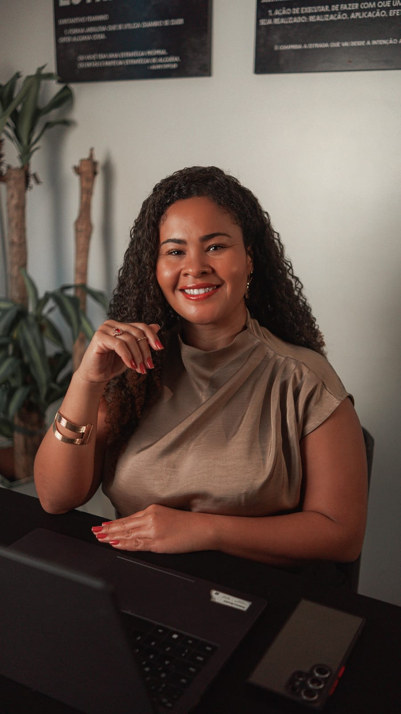
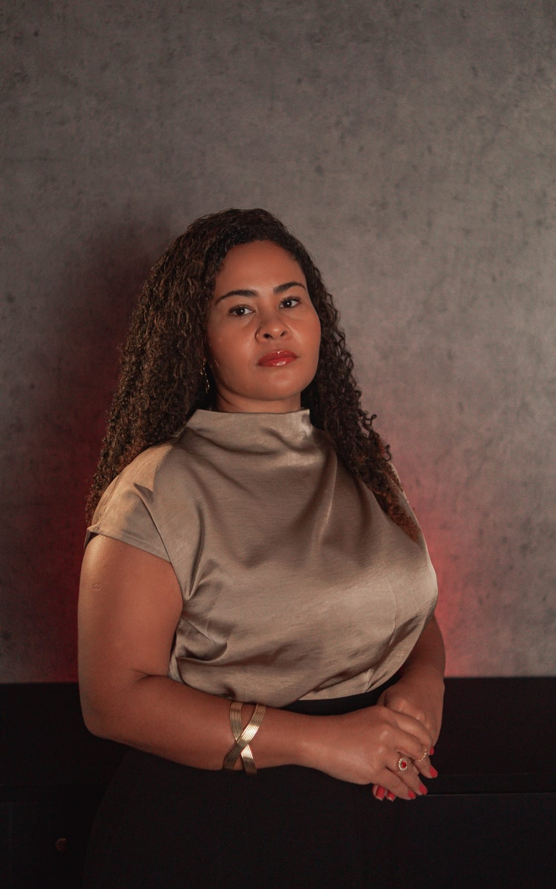
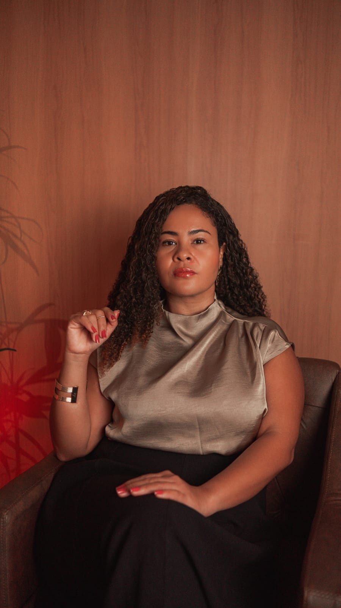
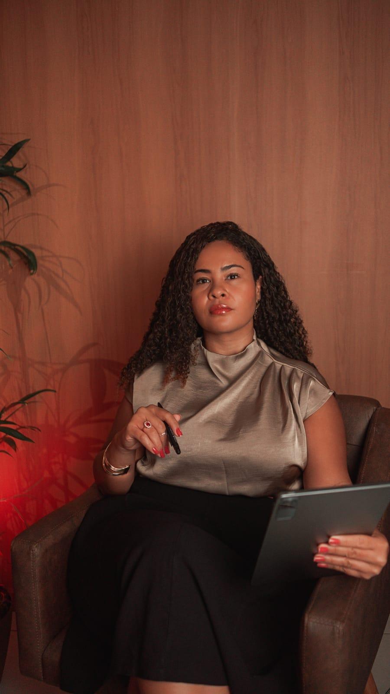
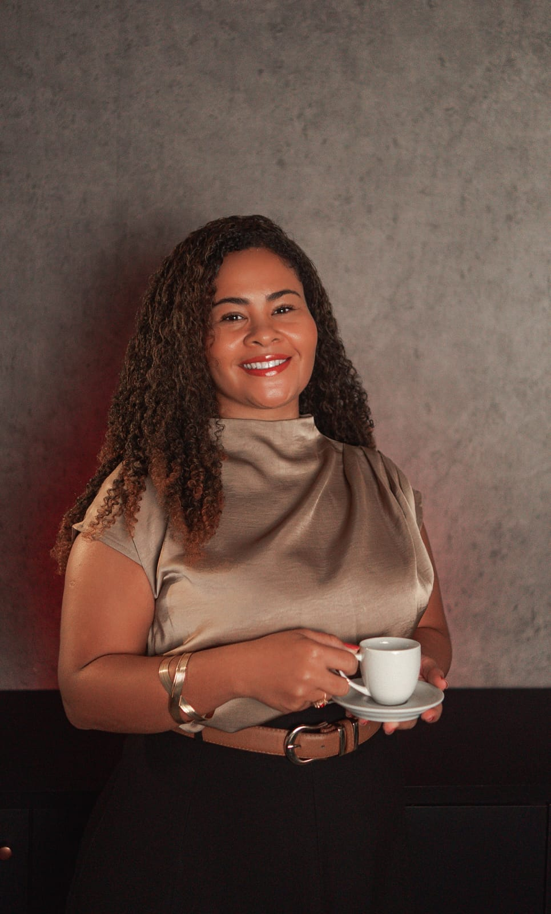
Dra. Marcela Paixão
Direito Previdenciário, Trabalhista e Cível · OAB-RJDesde muito cedo, eu já sabia qual profissão queria seguir. Enquanto muitas crianças ainda descobriam seus sonhos, eu tinha a convicção de que seria advogada. Curiosamente, essa escolha não foi influenciada por familiares ou pessoas próximas da área jurídica. Foi um sonho que nasceu de forma espontânea e me acompanhou desde a infância.
Minha vocação nasceu do desejo de compreender as leis, defender direitos e fazer a diferença na vida das pessoas por meio da Justiça. Ao longo dos anos, essa vontade apenas se fortaleceu, transformando-se em um compromisso diário com a ética, a dedicação e o constante aperfeiçoamento profissional.
A advocacia, para mim, vai muito além da aplicação do Direito. Significa acolher histórias, ouvir com atenção, compreender as necessidades de cada cliente e buscar soluções jurídicas seguras, sempre pautadas pela responsabilidade, transparência e respeito.
Hoje, tenho a satisfação de exercer a profissão que escolhi ainda na infância e a honra de compartilhar essa missão ao lado da minha irmã, Dra. Márcia Paixão. Juntas, unimos conhecimento, dedicação e compromisso para oferecer um atendimento humano, ético e personalizado, com a certeza de que cada caso representa uma oportunidade de contribuir para a proteção de direitos e para a construção de resultados que façam a diferença na vida daqueles que confiam em nosso trabalho.
Conduzimos cada caso com ética e transparência, oferecendo um atendimento verdadeiramente humano e o compromisso de fazer diferença na vida de quem confia em nós.
Dra. Marcela & Dra. Márcia PaixãoVamos conversar
sobre o seu caso?
A primeira conversa é para entendermos a sua situação, sem juridiquês e sem compromisso.